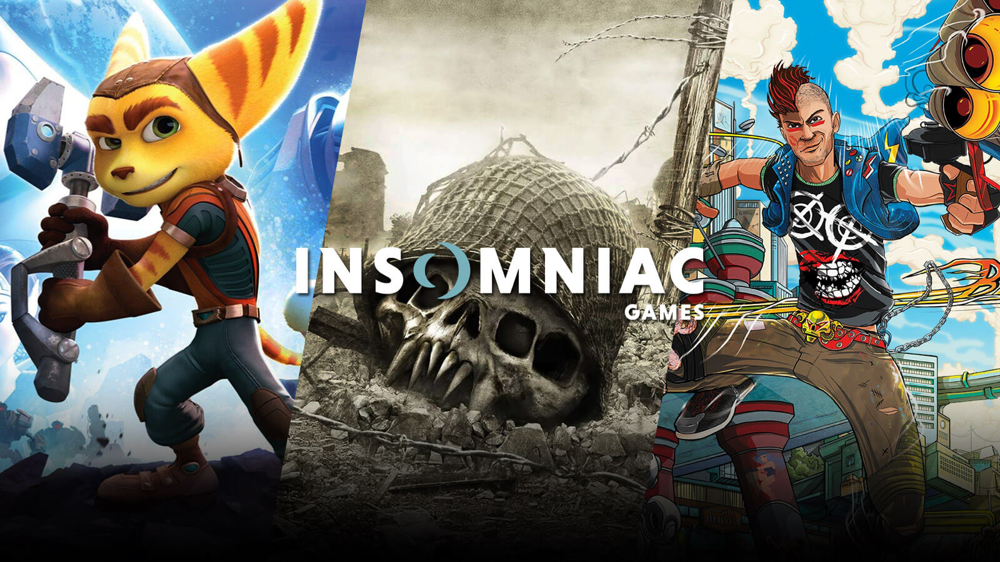

A Insomniac Games, estúdio responsável pelos aclamados jogos do Homem-Aranha para PS4 e PS5, surpreendeu os fãs da Marvel ao anunciar um novo projeto baseado em um dos heróis mais populares dos X-Men: Wolverine. O jogo, intitulado Marvel’s Wolverine, foi revelado em um breve teaser durante o PlayStation Showcase 2021, sem mostrar gameplay ou data de lançamento. O que se sabe é que o jogo será exclusivo para o PlayStation 5 e que promete trazer uma “jornada emocionante e cheia de suspense” no mundo de Wolverine.
O teaser mostra Logan, o alter-ego de Wolverine, sentado em um bar destruído e cheio de pessoas inconscientes ao fundo. Pelo sangue em suas mãos, provavelmente ele mesmo as nocauteou. Quando um último agressor saca uma faca e ameaça atacá-lo pelas costas, as tradicionais garras de adamantium, um metal fictício extremamente resistente do universo Marvel, saem de uma de suas mãos. A cena sugere que o jogo terá uma atmosfera sombria e violenta, condizente com a personalidade e o passado de Wolverine.
Confira:
Um herói com muitas histórias para contar
Wolverine é um dos personagens mais icônicos e complexos da Marvel. Criado em 1974 por Len Wein e John Romita Sr., ele fez sua primeira aparição nos quadrinhos como um inimigo do Hulk. Depois, ele se juntou aos X-Men, a equipe de mutantes liderada pelo Professor Xavier, e se tornou um dos membros mais queridos pelos fãs. Wolverine possui uma grande variedade de poderes, como o fator de cura acelerado, capacidade de farejar e garras de osso atreladas a seu esqueleto. Em suas origens, o personagem teve seus ossos e garras revestidos com uma camada de adamantium, em um experimento militar chamado Arma X.
Ao longo dos anos, Wolverine protagonizou diversas histórias nos quadrinhos, tanto em equipe quanto solo. Algumas das mais famosas são: “Arma X”, que conta como ele foi transformado em uma máquina de matar; “Dias de um Futuro Esquecido”, que mostra um futuro distópico onde os mutantes são caçados por robôs chamados Sentinelas; “Velho Logan”, que retrata um Logan envelhecido e amargurado em um mundo dominado por vilões; e “A Morte de Wolverine”, que narra os últimos momentos do herói antes de morrer.

Wolverine também fez muito sucesso nas telas, sendo interpretado por Hugh Jackman em nove filmes da franquia X-Men. O ator se despediu do papel em 2017, no aclamado filme Logan, dirigido por James Mangold. O filme foi elogiado pela crítica e pelo público por sua abordagem dramática e realista do personagem, além de ser indicado ao Oscar de Melhor Roteiro Adaptado.
Um estúdio com experiência e qualidade
A Insomniac Games é um dos estúdios mais renomados da indústria dos videogames. Fundada em 1994 por Ted Price, a empresa é conhecida por criar franquias como Spyro the Dragon, Ratchet & Clank e Resistance. Em 2018, a Insomniac lançou Marvel’s Spider-Man para PS4, um jogo que foi considerado por muitos como o melhor jogo do Homem-Aranha já feito. O jogo vendeu mais de 20 milhões de cópias e recebeu diversos prêmios, incluindo o BAFTA de Melhor Jogo. Em 2020, a Insomniac lançou Marvel’s Spider-Man: Miles Morales para PS4 e PS5, uma continuação que acompanha as aventuras do jovem Miles Morales como o novo Homem-Aranha.
A Insomniac Games foi adquirida pela Sony em 2019, se tornando parte da PlayStation Studios. Além de Marvel’s Wolverine, o estúdio também está trabalhando em Marvel’s Spider-Man 2, que foi confirmado para 2023. O jogo terá a presença de Venom, um dos maiores vilões do Homem-Aranha, e contará com a narração de Kraven, o Caçador. O jogo também terá a participação de Peter Parker e Miles Morales, que poderão ser controlados pelo jogado.
Com a experiência e a qualidade da Insomniac Games, os fãs de Wolverine podem esperar um jogo à altura do personagem. Ainda não há muitos detalhes sobre o enredo, o gameplay ou a data de lançamento de Marvel’s Wolverine, mas é provável que o jogo explore as origens, os conflitos e as aventuras do mutante mais famoso da Marvel. Enquanto isso, os jogadores podem se divertir com os jogos do Homem-Aranha e aguardar por mais novidades sobre Wolverine.